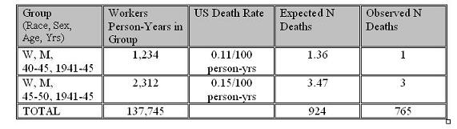

Standardized Mortality Ratio
Standardized Mortality Ratio
In the example of petrochemical workers:
- If U.S. death rates for age-sex-race-calendar period groups applied to the cohort,
- 924 deaths (from the U.S. population data from the National Center for Health Statistics) were expected in the cohort
- versus the 765 observed
Ratio of 765 observed/924 expected =
This is called a Standardized Mortality Ratio (SMR)
The Standardized Mortality Ratio (SMR) is formed by the ratio of the observed number of events in the cohort and the number of events that would be expected applying age-sex-race-calendar period-specific rates from the U.S. population to the distribution of the cohort by those variables. Applying the U.S. rates gives an overall mortality that would be expected if the U.S. rates were operating in the cohort. So the ratio is an expected compared to an observed rate.
Obtaining an Expected Rate for Comparison
The table below illustrates how U.S. population rates are used to produce a comparison rate to the cohort rate for the SMR calculation above.

For simplicity only 2 age-sex-race-calendar groups are shown and the person-years in the groups are hypothetical as that detail is not available in the paper. Since the cohort has a different age-sex-race composition from the U.S. population, one cannot just use the overall U.S. mortality rate for comparison. In addition the U.S. mortality rate has changed over time, albeit very slowly.
Calculating SMR
By using U.S. mortality rates specific to groups defined by those variables and applying them to the person-years at risk in each comparable group in the cohort, the expected number of deaths that would have been seen if the U.S. rates applied are calculated.
The actual cohort deaths gives the observed rate.
Since both have the same total person-time denominator, it cancels out in division and the ratio of the rates is just the ratio of the observed and the expected number of deaths.
This is called a Standardized Mortality Ratio (SMR).
Jeff Martin, MD
-- MaryB - 05 May 2009